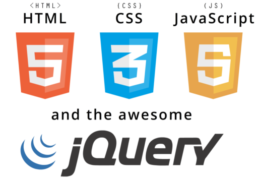
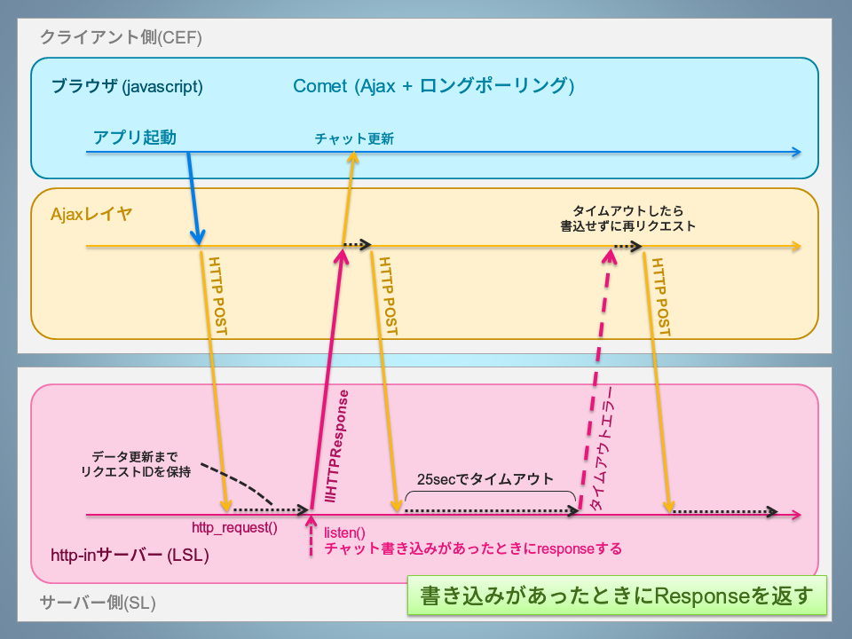

このエントリーはセカンドライフ技術系 Advent Calendar 2016の参加記事です。
http://www.adventar.org/calendars/1673
前回に引き続き、HTMLでHUDを開発する手法の解説をします。
jquery使ったAjaxとLSLでロングポーリング(comet)を実装する方法とGUIフレームワークに主眼をおいたより実用的な作例を紹介します。
LSLでチャットアプリを作る
お題としてチャットアプリ風のHUDを作ることにします。 チャットアプリとしての機能を満たすには、クライアントからHTTPリクエストを送信し、サーバーからのレスポンスにチャットログのデータをのせて送り返し、受け取ったデータをクライアントアプリが画面に書き込むように実装します。 チャットサーバとして、簡単のためにSLのローカルチャットを使うことにします。 さらに、サーバーに書き込まれた発言をすべてクライアントに拾い上げる必要がありますが、それをLSLとjavascriptで実装する方法について様々な方法があるので紹介しようと思います。 サンプルコードでは簡単のためにSLのローカルチャットListenで拾うことでチャットサーバとして使うことにします。
古典的なポーリング方法での実装
Webブラウザで動作するチャットアプリが登場したときから用いられていシンプルな方法で、タイマーをつかって一定時間ごとにページをリロードし、毎回すべてのチャットログをサーバーから取得します。 この方法でチャットクライアントを実装する場合は<frame>や<iframe>で分割した領域内にチャットログを表示した部分のみをページリロードするデザインが多く見られます。
設定した更新インターバルでページをリロードし続けるため、リロードのたびにページが白くなって待機状態になる・毎回１つのリクエストに過去分も含めてすべてのデータが含まれていて無駄がおおい・更新インターバルを上げるとサーバー負荷が増大する、などデメリットがおおいため最近では実用的なアプリにはほぼ使われなくなりました。
Ajaxによるポーリング方法での実装
Ajaxを用いて非同期通信とダイナミックHTMLによるDOM操作でページ遷移せずに画面の要素を部分的に追加したり書き換えする方式で、フロントエンド部分は非常に使いやすくなります。ただしバックグラウンドでは一定時間おきにリクエストを送信するので、1回当たりに取得するデータを更新分だけに絞るように実装するなど比較的減らすことはできるものの、サーバーへのアクセス回数およびそれによるサーバーへの負荷という意味では古典的なポーリング方法と大きな差はありません。
Cometでの実装
上述のAjaxによるポーリング方法に対してさらに、サーバーとの送受信のタイミングを最適化して必要最小限のリクエスト回数になるように設計された方法です。 サーバーがクライアントからリクエストを受け取ったら、すぐにレスポンスをするのではなくそのIDを保持して待機し、データの更新があったら即座にクライアントに送ります。 こうすることで通信回数を必要最小限におさえて、かつサーバーのチャットログが更新されてすぐに画面を更新するので、アプリケーションとして非常に高い応答性を得られます。 この方法はCometと呼ばれ、Ajaxによる非同期通信とロングポーリングを組み合わせて実現する疑似Pushの１つです。 実質的にHTTP Pushが使えないLSLで実装できる疑似Pushのなかでは最も効率の良い方法だと考えられます。 厳密な意味でのCometではデータが更新されるまでレスポンスを保留しますが、LSLの場合HTTPリクエストのIDが25秒間でタイムアウトする仕様となっていますので、データの更新がなかった場合は25秒ごとに再リクエストを送るという実装になります。 この再リクエストの処理はタイマーを使わなくてもリクエストのFailを検知して再帰処理することで継続的に動作ことができます。 このCometの方式でチャットアプリのスクリプトを作成します。

Comet方式のチャットアプリスクリプトの基本形
jqueryのajax()と、LSLのhttp_requestを使ったCometの実装サンプルです。 http_requestで受け取ったquery_idをグローバル変数に保持してlistenでllHTTPResponseを返すために再利用するだけなので、説明がおおげさなわりにはLSL側の実装は大したことはありません。
実行すると以下のような表示になります。 (クリックで元サイズのGIFアニメを表示します)
チャットで発言した内容がすぐにHUDにも反映されているのがわかるかとおもいます。
ぜひご自分でもスクリプトをコピーして実験してみてください。
※BOXで0.85メートル角のHUDを作成して、このままスクリプトエディターに貼り付けてください。

実行結果(クリックでGIFアニメを表示します)
せっかくなので見た目をアプリっぽくする
ネイティブなHTMLだけで作っているとどうしても見栄えがダサくなってしまうし、かっこよくしたくても自前でCSSを書いているとLSLの容量では足りなくなります。 そこでフレームワークをつかってお手軽におしゃれアプリにしてみます。 GUIフレームワークを使うと少ない行数でクールなアプリが作れます。 最近のフレームワークだとレスポンシブルデザインやモバイル環境に対応して
今回はGUIフレームワークとしてsemantic-uiを使います。
http://semantic-ui.com/
リファレンスのページはここです。
http://semantic-ui.com/introduction/getting-started.html
HUDとしての用途を考えると、モバイル用のフレームワークも有効だとおもいます。 jquery ui, jquery ui mobile, webix, Material UIなど簡単にインタラクティブなUIをつくれる類似のフレームワークがたくさんあるのでお気に入りを探してみてください。
お好みでログアウトなど各機能を設定するためのボタンを配置したら $(‘#id‘).on(‘click‘, function() {}のなかで$.ajax({})をつかってhttp-inに押下したボタンの情報を送信し、LSL側で受け取ってdetachなどの処理を発火することもできます。
-
HTML部分のコード
コードがながいため一旦HTML部分だけを抜き出して記載します。
-
LSLのコード
前回のエントリー で紹介したようにメモリ節約のために、html部分のインデントとコメントは削除して埋め込んでいます。
(内容はうえのHTMLコードとおなじです)
BOXで0.050×0.850×0.850メートル角または0.050×0.850×0.425メートル角のHUDを作成して、このままスクリプトエディターに貼り付けてください。
実行結果はこのようになります。 使用感はさきほどとほぼおなじです。 右上のLOGOUTをクリックするとdetachされます。
アプリ内のインプット枠でも、SLのチャットコマンドで「/100 発言内容」でもどちらでも発言することができます。(初期値)
チャンネルを0にすればローカルチャットを拾います。このHUDをつけていると同一SIM内のどこにいても会話することができます。
LSLでは奇跡的にhttp_requestで受けたidを保持しておいて好きなタイミングのeventで使うだけという簡単な方法でなんちゃってcometを実装できます。 今回紹介したのはチャットアプリなのでResponseするタイミングはlistenイベントでしたが、touchやsensorなどほかのイベントでももちろん同様につかうことができます。
最大25秒おきにずっとリクエストし続けることにはなりますが、LSL側からCEFに任意のタイミングでトリガーを送れることになります。
Media HUDでは重要なテクニックになると思いますので、しくみをよく理解して活用してみてください。
関連記事へのリンク
3日め: Media HUD…HTMLでHUDを開発する(3/3)
http://masterpoppy.inspi.me/archives/1007
1日め: Media HUD…HTMLでHUDを開発する(1/3)
http://masterpoppy.inspi.me/archives/1003


{kind=link}
{kind=link}
{kind=link}